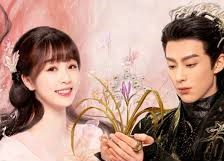

Saiba um pouco mais sobre esse C-Drama
O temível Lorde Demônio, Dong Fang Qing Cang (Dylan Wang), uma vez causou o caos total no reino dos deuses, derrotando clãs inteiros e dominando todos os seus inimigos à frente de seu temível exército de demônios. Uma das jovens do exército derrotado renasce como uma fada chamada Xiao Lan Hua (Esther Yu) muitos milhares de anos depois. Lorde Demônio há muito foi amaldiçoado e aprisionado em uma torre mágica — e permaneceu lá por milhares de anos.
Mas quando, devido a um acidente, Xiao Lan Hua involuntariamente o liberta, ele pensa que pode escapar. Ele acredita que tudo o que ele precisa fazer é sacrificar Xiao Lan Hua e estará livre para desencadear o caos novamente e conquistar o mundo conhecido. Há uma reviravolta, no entanto. No processo de libertá-lo, alguma mágica bizarra parece ter ocorrido — e os dois trocaram de corpo. De repente, o temível Lorde Demônio está preso dentro do corpo de uma fada frágil. E Xiao Lan Hua se encontra na posse de uma força sobre-humana! Se alguém descobrir o que aconteceu, ele garante a ela, os dois serão condenados. Mas enquanto eles procuram uma forma de desfazer o feitiço, o amor começa a lançar o seu próprio feitiço mágico!
“Amor entre Fada e Demônio” é um seriado de drama chinês, de 2022, dirigido por Yi Zheng.

Fada Xiao Lan Hua e o Lorde Demônio Dong Fang Qing Cang
Xiao Lan e o Dong Fang em uma histoória de amor que desafia todas as leis dos céus.

Um amor puro e verdadeiro.